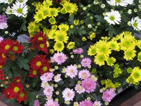
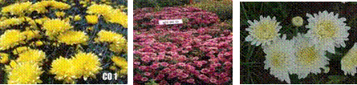
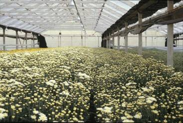
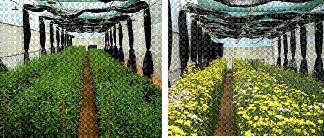
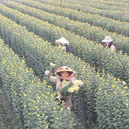
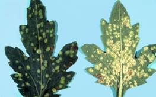
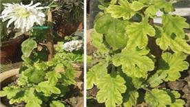
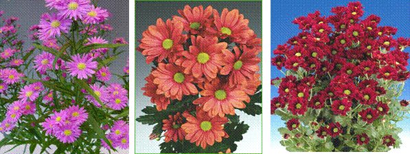
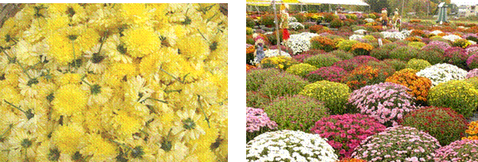

HORT 281 :: Lecture 38 :: CHRYSANTHEMUM

CHRYSANTHEMUM
Scientific name: Dendranthema grandiflora
Local name: Chrysanthemum
Hindi name: Guldaudi
Family: Asteracea
Origin and History
It is native to the northern hemisphere chiefly Europe and Asia. Historically, Confucius the great Chinese philosopher has, in his writing, mentioned chrysanthemum as early as in 500 BC making it one of the most ancient cultivated flower of the world. In England, the popularity of chrysanthemum as exhibition flower is at its peak. It has second ranks as commercial crop. In the United States, it is the number one dollar earner flower and the most reliable. It is difficult to say with certainty when its culture began in India. Shant Gyanehswar has mentioned it in his famous Marathi exposition of Gita “Gyaneshwari” written in AD 1290. The Hindi name guldaudi (meaning flower of Daud) suggests that it must have been grown during the Moghul period in this country.
Uses
Chrysanthemum is versatile; it can be planted in the bed, cultured in the pot, used for garland making and also as cut-flower for flower arrangement. In India, large flowered varieties are grown for exhibition purpose while small flowered varieties are grown for cut flower, making garland, wreaths, veni and religious offerings.
Area and Distribution
The chrysanthemum is one of the most important flower crops commercially grown in different parts of the world. The Netherlands, Italy, Colombia, Spain, Germany and USA are the important countries where it is mainly grown under greenhouse conditions. In India, it is commercially grown in Tamil Nadu, Karnataka, and Maharastra. In different states of India, it is grown with different names, Guldaudi in Hindi belt, Chandramalika, in the eastern state, Samanti in the southern states and Shevanti in the western states. It is grown in on area of about 4,000 ha.
Botanical description
It belongs to family Asteraceae. The species of chrysanthemum have fibrous root system (shallow rooted plant), herbaceous perennial plant growing to 50-150 cm tall, with deeply lobed leaves and large flower heads, white, yellow or pink.
Climate Requirement
Chrysanthemum requires long days for good vegetative growth and short days for flowering. The most important environmental factors influencing the growth and flowering of these plants are light and temperature. The rate of vegetative growth and flowering are also affected by temperature. The optimum temperature of 15.6 0C is required. The relative humidity of 70 to 90% is suitable for the plants.
Soil Requirement
The ideal soil for chrysanthemum growing is a well drained, sandy loam of good texture and aeration. Good amount of organic matter and pH of 6.5 is essential. It is a shallow fibrous rooted plant and is very sensible to water logged conditions.
Varieties
Brief description of the some of the important varieties developed at different research institutions are given below:
Kirti: It is hybrid between Angle x G.P.I. It flowers early (88 days). It bears white coloured Korean type of flowers which fades to pink tinge. It is floriferous and produces 119 flowers per plant. It yields 168 g of flowers/plant. Shelf life of flowers is 7.5 days. It is suitable for bedding and potting purpose besides the flower can be used for floral decoration.
Arka Swarna: A cross between Nanko x CO-1. This hybrid bears pompon yellow flowers. It is found superior in respect to plant height, number of flowers per plant, flower size, flower weight, flower yield per plant and flowering duration. This is suitable for cut flower and loose flower purposes.
Birbal Sahni: This variety flowers in October to November. It requires about 121 days for flowering. Plants are about 65 cm tall and grow upright. Flowers are pompon type, snow white in colour and small sized. Its average yield is 32 quintals/ha.
Shanti: It is a small flowered, white decorative type chrysanthemum. It is good cut flower and garland variety. Its plant grows 51.2 cm height 99 flower heads/plant; floret length 1.6 cm, floret colour is white.
Y2K: It is a small flowered, white anemone type mini chrysanthemum. It requires neither ‘pinching nor ‘staking. Its plants are 34.6 cm tall, 370 flower heads/plant. Flowers are white in colour.
Arka Ganga: This is a cross between Flirt and Red Gold. It takes 127 days for flowering. It produces 143 flowers per plant. Flowers are white colour having pink tinge. The vase life is 11 days. It is suitable for loose flowers and cut flowers.
Sadbhavana: It is small flowered, double Korean type mini chrysanthemum. Plant heights 29.1 cm, 303 flower heads/plant, and floret colour is red purple group.
Appu: Flowers purple in colour & suitable for mini culture. Flower length is 1.5 cm it weighs 0.4 g.
Bindiya: Flowers dark crimson, Double Korean type suitable for mini culture. Flower lengths are 1.1 cm and flower weight is 0.3 g.

Coimbatore varieties: Selection from a local variety of Coimbatore. It has longer flowering duration as compared to the parent. CO 1 (yellow coloured flowers), CO 2 (purple coloured flowers) and MDU 1 (yellow coloured flowers) are commonly cultivated.
Pankaj: It bears pink attractive flowers, which are decorative type. Diameter of flower is 4.8 cm which weigh 2.68 g. It is high yielding and produces 140 flowers with a yield of 363 g per plant. Its attractive flowers on stiff stalk make them suitable for cut flower purpose. Loose flowers can be used for floral decoration.
Preparation of field
The field is ploughed two to three times before preparation of beds for planting. Trials conducted under All India Coordinated Research Project on Floriculture recommended a basal application of FYM @ 5 kg/m2.
Time of planting
Terminal cuttings of stock plants are taken in June and they are transplanted after rooting in 15 cm pots at the end of July. These plants are ready for pinching during end of August or beginning of September.
Spacing
30 x 30 cm (plant to plant and row to row)
Propagation
Chrysanthemum is propagated vegetatively through suckers, cuttings or by micro-propagation.
Suckers
After flowering, the stem is cut back just above the ground. This induces the formation of side suckers which are separated from the mother plant and are planted in sand bed. Well rooted suckers can be directly transplanted in the field.
To plant one hectare of land, 1, 11,000 suckers obtained from 15 cents of the previous crop are required. Dip the roots of the suckers in 1 g Emisan in 1 lit of water to protect against wilt. The suckers are planted during June - July at 30 x 30 cm spacing on one side of the ridges. Pinching is done once in 4 weeks after planting to induce more branching.
Terminal Cuttings
These cuttings are taken from a healthy stock plant. Length of cuttings is about 5-7 cm. The cuttings are dipped in 2500 ppm indole butyric acid (IBA) or in seradex/ keradex (rooting hormone). These cuttings are put in sand beds in shade conditions.
Nutrient Management
As the crop responds well to manuring, add 8-10 tonnes of well rotten FYM per acre. Apply 50 kg of Nitrogen, 160 kg P2O5 and 80 kg K2O as a basal dose. Spray GA3 at 50 ppm at 30, 45 and 60 days after planting to increase the flower yield.
Irrigation Management
The frequency of irrigation depends on the stage of growth, soil and weather conditions. Proper drainage system should be maintained for chrysanthemum grown both in beds and in pots. The height and vigour of the chrysanthemum plant can be influenced by regulating quantity and frequency of irrigation. In our country, the method of irrigating the fields is by channel system and for pots manual bucket system
Weed Management
Weeds should be avoided in the greenhouse as well as fields. They deplete moisture and nourishment from plants. Shortly after cuttings are established, carefully scratch the ground to uproot the weeds when they are small. 2-3 hand weeding are required for proper growth of the plant. First weeding should be done one month after planting. Herbicide can also be applied to control weeds from the field.
Harvesting
Depending upon the varieties plant start yielding flower after 3-4 months of transplanting. For cut flower purpose, stem is cut about 10 cm above the soil to avoid cutting into wooden tissue. The lower 1/3 of stem are placed in water to extend the vase life of cut flowers. The best way to protect the flowers is to sleeve the bunch with a transparent plastic sleeve. The correct stages of harvest depend up on the cultivar, marketing and purpose etc.
Yield
Flowering seasons vary from region to region. The natural blooming seasons for most of the regions lasts from July to February. One can harvest the flowers around 15 times. The yield ranges from 9 to 10 tonnes of loose flowers per acre.
Post Harvest Activities
Loose flowers are packed in bamboo baskets or gunny bags for marketing. The capacity of bamboo baskets ranges from 1 to 7 kg while gunny bags can accommodate 30 kg of loose flowers.
CUT CHRYSANTHEMUM (Dendranthema grandiflora Tzeuleu)

Varieties
Ajay, Sonali, Swarna, Ravi Kiran, Akash, Yellow Start, Chandrakand, Red Gold, Indira and Rakhee are some of the popular varieties.
Growing media
The growing media consists of soil, compost and coco peat in the ratio of 1:1:2. The beds are formed with 1 m width, 0.3m height and at convenient length. The soil pH must be 6.5 with 1 to 1.5 EC (Electrical Conductivity).
Propagation and planting
Rooted cuttings are planted at 20 cm between rows and 15 cm between plants within the row, accommodating 30 plants/m2.
Irrigation
About 8 – 9 lit of water/sq.mt is required/day.
Fertilizer management
NPK @ 20:20:10 g/m2 is applied through fertigation at weekly intervals
Growth regulators
Alar 50 – 150 gm/100 lit water and B 9 at 8 – 25 ml/lit of water is used twice at the growing stage.
Pinching
Removal of the growing tip is done at 3rd and 5th week after planting to encourage axillary shoots.
Disbudding
Removal of excess flower buds is done 7 weeks after planting to improve the flower size.
Blindness
It occurs when the night temperature is too low and the days are short at the time when flower buds are forming. A rosetted type of growth is indicative of this difficulty. Center petals that fail to develop can be due to excessive heat; or in dark weather some varieties apparently lack enough food to open the flower. Chlorosis, or yellowing of the upper foliage, is generally associated with over watering, excessive fertilizer in the soil, or insects or diseases attacking the root system. Continued growth of shoots and failure to form flower buds when short days are started the mean night temperature was too low. Sunscald is prevalent on standards in flower in very warm weather. The petals turn brown and dry up.
Light requirement

Lighting for chrysanthemum
Growth phase |
Weeks from planting |
Photoperiod |
Vegetative phase |
Up to 4-5 weeks from planting till the plant attains 50 to 60 cm height |
Long day: 13 hrs light and 11 hrs dark |
Flowering |
5 -6 weeks after planting till harvest |
Short day: 10 hrs light and 14 hrs dark |
Harvest
Harvest index
Flowers are cut soon after the disappearance of green colour in the centre of the flowers and the center petals are fully expanded. Pompons are cut when they are fully developed. Spray types should be cut when the central flower is open and the surrounding flowers are well developed and the varieties which shed pollen badly will have to be cut before they become unsighty. Cutting the stem while the flowers are slightly on the “green” side is preferred because it offers a better quality product for the customer. Harvested flowers are to be kept immediately in a bucket containing water and preservatives to avoid desiccation.
Yield
The yield ranges about 270 sprays / m2
Post harvest technology
Grading of flowers depends on colour, diameter of flower and on stem length.
Pulsing |
: |
Sucrose 4 % for 24 hrs |
Holding solution |
: |
BA 10 ppm + Bavistin 0.1 % + Sucrose 2 % |
Wrapping material |
: |
Polysleeves with holes (50 gauge thickness) |
After harvest, the stem have to be cut at equal length (90 cm is the standard), bunched in five, putting a rubber band at the base and sliding them into a plastic sleeve and putting bunches in plastic buckets filled with water. The mature chrysanthemum can be stored dry for 6-8 weeks at a temperature of 0.5 0 C. Early morning on the day of shipment (or night before), bunches can be packed in boxes.
Common features for both cut and loose chrysanthemum
Marketing and Transportation
Transporting of flowers is done through train, trucks, ships (refrigerated) etc. Before a long day transport, it is better to keep flowers in water for at least 4 hours in a cold store. Among the cut flowers chrysanthemum are amongst the top three best selling flower in all most all major flower consuming countries.
Few striking features which have made this flower commercial in the international market are:
- The standard type flowers fetch higher price though their share is less.
- Spray types have smaller flower size and has major share in the world market.
- Maximum imports from European nation are from June to October.
International market of chrysanthemum is in Japan, the Netherlands, Germany, United Kingdom, United States, France, Italy, Denmark and Belgium.
Best Practices of Crop Cultivation
Pinching
After planting the growth is mostly upwards with very little branching. To arrest such tall growth, a single procedure called ‘pinching’ is used. Only soft vegetative shoot tips 1.5 to 3.0 cm long are removed. Pinching is one of the most important operations in chrysanthemum culture. Pinching is most essential for small flowered chrysanthemum. Pinching increases the number of flowering stems in each plant.
Disbudding & De-shooting
These operations are mostly performed for long flowering & decorative type chrysanthemum. Disbudding of spray varieties is very easy because in this case only the large apical bud is removed and the auxiliary buds are allowed to develop, while in standard varieties remove all axillary buds & apical bud is allowed to develop.
Staking of plants
Staking is necessary to keep plants erect and to maintain proper shape of plants and bloom. Stakes are prepared mostly from bamboo sticks. Staking of plants is required for vertical support of the plants. Only one stake is used when a grower needs single bloom per plant.
Desuckering
For proper and vigorous growth of the plant; suckers are removed from time to time. Without de-suckering, the main plant will loose vigour and become weak.
Important Tips and best practices for crop cultivation
- Always use disease free planting material
- Crop rotation should be practiced
- Proper pinching and disbudding should be followed for standard/spray chrysanthemum production
- Maintain proper temperature for quality flower production.
- Use bamboo stick for the support of tender stem of the plant.
Pest Management
Common pest their Control measures:
Aphids (Myzus persicae)
This are small greenish to black dot like insects which are seen in large number sucking the sap from the tender parts like stem tips, flower buds and young leaves. The affected flower buds fail to open and dry up before opening. Damage begins in December and is in peak during Feb-March.
Control measures
Spraying at fortnightly interval with 0. 5% Monocrotophos or 0.1% Malathion or 0.02% Phosphomidon.
Mites (Tetranychus urticae)
Very minute dot-like insects of red colour seen on the under surface of leaves, particularly in hot dry season. The affected flower buds fail to open and dry up even before opening.
Control measures
Spray of 0.05% Dicofol or 0.05% Vertimac or Pentac at fortnightly interval.
Thrips (Thrips tabaci)
Thrips cause damage to summer blooming varieties. Infected flowers become discoloured & dry.
Control measures
Spraying Dimethoate at 0.05 per cent 2 or 3 times at 15 days interval.
Leaf miners (Phythomgza syngenesiae):
Incidence is maximum during March-June. The infestation is more severe in polyhouse. The young maggot stage attacks the leaves by making tunnels in between the upper and lower surface of the leaf. In severe cases, the leaves completely dry up and fall off.
Control measures
- Removal & destruction of affected leaves help in containing the spread.
- Spraying of 0.05% Monocrotophos or 0.05% Triazophos.
Leaf folder
All the larval stage attack the plant with the help of silky threads, the larve folds the leaves starts feeding on leaves from inside.
Control measures
Spray 0.02% Cypermethrin or 0.02% Decamethrin or 0.05% Quinolophos at fortnightly interval.
Disease Management
Common Diseases & their Control Measures
Root rot
(Pythium spp or Phytophthora spp) In this disease the infected plant suddenly wilt the plant parts like roots, stems, leaves.
Control measures
- Provide good drainage conditions to prevent water logging.
- Soil drench with Thiram or Captan or mixture of both at the rate of 2.5 g/m2 area prevents the infection.
- Mancozeb, Metalaxyl and Fosetyl also used for control.
Leaf spot: (Septoria chrysanthemella)
Grayish brown spots appear on leaves which turn yellow surroundings. When flowering starts, the infection occurs on flower buds, which rot completely. The disease spreads from down to upwards.
Control measures
- Spraying with Mancozeb at fortnightly interval helps in controlling the disease.
- Burning and destroying of infected leaves.
- Spray of Copper Oxychloride (0.2%)
Wilt: (Verticillium dahliae.)
The leaves turn yellow to grey and the branch or whole plant wilts gradually. It may occur due to a number of diseases, disorders or even just lack of water.
Control measures
- Solarization of soil by using black polythene mulch during summer months.
- Soil treatment with Dithane M-45 (0.2%)
- Dipping of rooted cuttings in Benomyl suspension before planting.
- Use of resistant varieties.
Rust: (Puccinia spp)
It is serious disease especially in the early spring. Brown spores appear in the underside of the leaves. Severely infected plants become very weak and fail to bloom properly.
Control measures
- Sanitation and clean cultivation prevent the disease.
- Early removal of infected leaves.
- Dusting plants either with sulphur and other fungicides such as Zineb, Captan etc. can be used.
Powdery mildew: (Oidium chrysanthemi)
There is powdery coating on the leaves appear. It may lead to defoliation.
Control measures: Use of Sulphur fungicides or Carbendazim
Viral disease
Chrysanthemum stunt
Overall reduction in plant size, foliage become pale in colour, flower may open prematurely. Disease occur diving pinching. This disease occurs during pinching.
Control measures
Use of cuttings from virus free plants.
Chrysanthemum mosaic disease
1. Cuttings should be obtained from virus – free indexed stocks.
2. Removal and destruction of infected plants.
3. Destruction of the weed host.
4. Spraying Monocrotophos 0.05 per cent controls the vector and reduces the disease.
Alternative Use and Value Addition
Besides being used for cut/loose flower purpose, it is also used for garlands, bouquet, greeting cards, dry flower etc.
As cut flowers

As loose flower In landscaping

***********
1. Common name of chrysanthemum is _______________
a. Guldaudi b. Glory of east
c. Autumn Queen d. All the above
2. Chrysanthemum is a ________ plant
a. short day b. long clay
c. day neutral d. photo insensitive
3. _______ increases the number of flowering stems in chrysanthemum
a. pruning b. pinching
c. netting d. deshooling
4. Japanese style of chrysanthemum culture
a. Ikebana b. Kimono
c. Sen Rin tsukisi d. Naker
5. Plant growth regulator used to enhance the rootng of cuttings in chrysanthemum
a. NAA b. 2,4-D
c. GA3 d. IBA
| Download this lecture as PDF here |